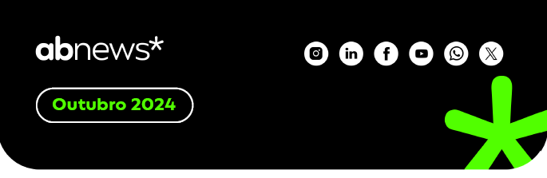

<!doctype html>
<html>
<head>
  <meta charset="UTF-8">
  <meta name="viewport" content="width=device-width, initial-scale=1.0">
  <script src="https://cdn.tailwindcss.com"></script>
</head>
<!-- <body>
  <header>
    
  </header>
  

  <section class="px-4 md:px-6 mb-16">
    <div class="bg-blue-600 rounded-3xl mt-10 py-16 px-8 md:px-20 flex flex-col">
      <p class="text-2xl md:text-4xl mb-5 text-[#51ff00] font-bold">
        Novos Episódios do ABcast Disponíveis!  
      </p>
      <p class="text-2xl md:text-3xl mb-5 text-white font-bold">
        Piscou e já temos três novos episódios fresquinhos no ABcast para você!                 
      </p>
      <p class="text-xl md:text-2xl text-white mb-5">
        Neste mês, trazemos temas essenciais para quem
        quer estar por dentro dos mercados cripto e financeiro:
      </p> 

      <div class="flex gap-5 mt-10 mb-5">
        <div class="bg-[#51ff00] w-[1rem] h-40 rounded-3xl">          
        </div>
        <div class="w-11/12 ">
          <p class="text-white-50">
            <span class="text-[#51ff00] text-2xl font-bold">
              Experiências e Insights sobre o Impacto da Tecnologia
            Financeira e das Criptomoedas
            </span> 
            <span class="text-white text-2xl">
            – Explore como essas
            inovações estão transformando o cenário atual e
            impulsionando novas oportunidades, com insights trazidos
            pelos associados, Gustavo Blasco (Grupo GCB) e Fernando
            Carvalho (QR Capital)
            </span>
          </p>
        </div>
      </div>

      <div class="flex gap-5 my-5">
        <div class="bg-[#51ff00] w-[1rem] h-32 rounded-3xl">          
        </div>
        <div class="w-11/12 ">
          <p class="text-white-50">
            <span class="text-[#51ff00] text-2xl font-bold">
              Segurança e Compliance no Mercado Cripto
            </span> 
            <span class="text-white text-2xl">
              – Um episódio
              focado nas práticas para garantir a segurança e a
              conformidade nesse setor em expansão, junto à associada
              Carolina Correia (Coinext).
            </span>
          </p>
        </div>
      </div>

      <div class="flex gap-5 my-5">
        <div class="bg-[#51ff00] w-[1rem] h-32 rounded-3xl">          
        </div>
        <div class="w-11/12 ">
          <p class="text-white-50">
            <span class="text-[#51ff00] text-2xl font-bold">
              Autorregulação na ABcripto
            </span> 
            <span class="text-white text-2xl">
              – Descubra os processos,
              desafios e o impacto da autorregulação nos mercados cripto
              e financeiro, com a participação dos associados, Rita
              Casolato (LIQI) e Matheus Cangussu (Loopipay).
            </span>
          </p>
        </div>
      </div>

      <span class="text-white text-2xl mt-10">
        Não perca esses conteúdos e acompanhe de perto as discussões
        que moldam o futuro do mercado. Assista agora!
      </span>

    </div>
    <div class="flex justify-center">
      <a href="https://www.youtube.com/@abcripto" class="bg-[#51ff00] text-black text-lg md:text-2xl font-bold rounded-full p-2 w-9/12 sm:w-2/4 text-center block -mt-5">
        Acesse nosso canal
      </a> 
    </div> 
  </section>

  <section class="px-4 md:px-6 mb-16">
    <div class="bg-blue-600 rounded-3xl mt-10 py-16 px-8 md:px-20 flex flex-col">
      <p class="text-2xl md:text-3xl mb-5 text-white font-bold">
        Consulta Pública sobre Banking
        as a Service (BaaS)                 
      </p>
      <p class="text-base md:text-2xl text-white">
        O Banco Central do Brasil lançou recentemente uma consulta
        pública para discutir a regulamentação do <span class="font-bold">Banking as a Service
          (BaaS)</span>. Esta consulta visa estruturar um modelo regulatório para
        o setor, com o objetivo de garantir segurança, inovação e
        competitividade, além de atender a crescente demanda por
        soluções financeiras acessíveis e personalizadas. A ABcripto
        acompanha essa iniciativa e incentiva seus associados a
        participarem ativamente do processo.
      </p> 

         
    </div>
    <div class="flex justify-start">
      <a href="https://www.gov.br/participamaisbrasil/edital-de-participacao-social-n-108-2024" class="bg-[#51ff00] text-black text-lg md:text-2xl font-bold rounded-full p-2 w-9/12 sm:w-2/4 text-center block -mt-5">
        Confira mais detalhes
      </a> 
    </div> 
  </section>
  
  <section class="px-4 md:px-6 mb-16">
    <div class="bg-black rounded-3xl mt-10 py-16 px-8 md:px-20 flex flex-col">
      <p class="text-2xl md:text-3xl mb-5 text-[#51ff00]">
        Consultas Públicas do
        Banco Central, CVM e RFB       
      </p>
      <p class="text-lg md:text-2xl mb-5 text-white">
        Em novembro, o Banco Central, a CVM e a Receita Federal do
        Brasil (RFB) irão promover consultas públicas relevantes para o
        setor de criptoativos. A RFB, por meio da Instrução Normativa
        RFB nº 1888, estabelece a obrigatoriedade de prestação de
        informações sobre operações realizadas com criptoativos à
        Secretaria Especial da Receita Federal. A participação de todos
        os interessados é fundamental para enriquecer o debate e
        moldar um ambiente regulatório mais robusto e eficaz. Fique
        atento às datas e aproveite a oportunidade para contribuir com
        suas opiniões!      
      </p>    
    </div>
    <a href="http://normas.receita.fazenda.gov.br/sijut2consulta/link.action?idAto=100592" class="bg-[#51ff00] text-black font-bold text-lg md:text-2xl rounded-full p-3 w-9/12 sm:w-2/4 text-center block -mt-5">
      Acesse a Consulta Pública
    </a>
  </section>
  
  <section class="px-4 md:px-6 mb-16">
    <div class="bg-[#51ff00] rounded-3xl mt-10 py-16 px-8 md:px-20 flex flex-col">
      <p class="text-2xl md:text-3xl mb-5 text-black font-bold">
        Programa de Certificação
        Profissional da ABcripto     
      </p>
      <p class="text-lg md:text-2xl mb-5 text-black">
        Estamos entusiasmados em lançar o Programa de Certificação
        Profissional em Ativos Virtuais da ABcripto (CEAV ABcripto), que
        visa capacitar e reconhecer os profissionais do setor de
        criptoativos. Este programa abordará as melhores práticas,
        regulamentações e tendências do mercado, preparando os
        participantes para se destacarem em um ambiente em
        constante evolução.     
      </p>  
    </div>
  </section>        
  
  
  
  
  
</body> -->


<body>
  <header>
    
  </header>

  <!-- <section style="padding: 1rem; margin-bottom: 4rem;">
    <div style="background-color: #2563EB; border-radius: 2rem; margin-top: 2.5rem; padding: 4rem 2rem; ">
      <p style="font-size: 2rem; margin-bottom: 1.25rem; color: #51ff00; font-weight: bold;">
        Novos Episódios do ABcast Disponíveis!
      </p>
      <p style="font-size: 2rem; margin-bottom: 1.25rem; color: white; font-weight: bold;">
        Piscou e já temos três novos episódios fresquinhos no ABcast para você!
      </p>
      <p style="font-size: 1.50rem; color: white; margin-bottom: 1.25rem;">
        Neste mês, trazemos temas essenciais para quem quer estar por dentro dos mercados cripto e financeiro:
      </p>

      <div style="display: flex; gap: 1.25rem; margin-top: 2.5rem; margin-bottom: 1.25rem;">
        <div style="background-color: #51ff00; width: 0.25rem; height: 10rem; border-radius: 2rem;"></div>
        <div style="width: 91.6666667%;">
          <p>
            <span style="color: #51ff00; font-size: 2rem; font-weight: bold;">
              Experiências e Insights sobre o Impacto da Tecnologia Financeira e das Criptomoedas
            </span>
            <span style="color: white; font-size: 2rem;">
              – Explore como essas inovações estão transformando o cenário atual e impulsionando novas oportunidades, com insights trazidos pelos associados, Gustavo Blasco (Grupo GCB) e Fernando Carvalho (QR Capital)
            </span>
          </p>
        </div>
      </div>

      <div style="display: flex; gap: 1.25rem; margin: 1.25rem 0;">
        <div style="background-color: #51ff00; width: 0.25rem; height: 8rem; border-radius: 2rem;"></div>
        <div style="width: 91.6666667%;">
          <p>
            <span style="color: #51ff00; font-size: 2rem; font-weight: bold;">
              Segurança e Compliance no Mercado Cripto
            </span>
            <span style="color: white; font-size: 2rem;">
              – Um episódio focado nas práticas para garantir a segurança e a conformidade nesse setor em expansão, junto à associada Carolina Correia (Coinext).
            </span>
          </p>
        </div>
      </div>

      <div style="display: flex; gap: 1.25rem; margin: 1.25rem 0;">
        <div style="background-color: #51ff00; width: 0.25rem; height: 8rem; border-radius: 2rem;"></div>
        <div style="width: 91.6666667%;">
          <p>
            <span style="color: #51ff00; font-size: 2rem; font-weight: bold;">
              Autorregulação na ABcripto
            </span>
            <span style="color: white; font-size: 2rem;">
              – Descubra os processos, desafios e o impacto da autorregulação nos mercados cripto e financeiro, com a participação dos associados, Rita Casolato (LIQI) e Matheus Cangussu (Loopipay).
            </span>
          </p>
        </div>
      </div>

      <span style="color: white; font-size: 2rem; margin-top: 2.5rem;">
        Não perca esses conteúdos e acompanhe de perto as discussões que moldam o futuro do mercado. Assista agora!
      </span>
    </div>
    <div style="display: flex; justify-content: center;">
      <a href="https://www.youtube.com/@abcripto" style="background-color: #51ff00; color: black; font-size: 1.5rem; font-weight: bold; border-radius: 9999px; padding: 0.5rem; width: 75%; text-align: center; display: block; margin-top: -1.25rem;">
        Acesse nosso canal
      </a>
    </div>
  </section> -->

  <!-- <section style="padding: 1rem; margin-bottom: 4rem;">
    <div style="background-color: #2563EB; border-radius: 2rem; margin-top: 2.5rem; padding: 4rem 2rem; display: flex; flex-direction: column;">
      <p style="font-size: 2rem; margin-bottom: 1.25rem; color: white; font-weight: bold;">
        Consulta Pública sobre Banking as a Service (BaaS)
      </p>
      <p style="font-size: 1rem; color: white;">
        O Banco Central do Brasil lançou recentemente uma consulta pública para discutir a regulamentação do <span style="font-weight: bold;">Banking as a Service (BaaS)</span>. Esta consulta visa estruturar um modelo regulatório para o setor, com o objetivo de garantir segurança, inovação e competitividade, além de atender a crescente demanda por soluções financeiras acessíveis e personalizadas. A ABcripto acompanha essa iniciativa e incentiva seus associados a participarem ativamente do processo.
      </p>
    </div>
    <div style="display: flex; justify-content: flex-start;">
      <a href="https://www.gov.br/participamaisbrasil/edital-de-participacao-social-n-108-2024" style="background-color: #51ff00; color: black; font-size: 1.5rem; font-weight: bold; border-radius: 9999px; padding: 0.5rem; width: 75%; text-align: center; display: block; margin-top: -1.25rem;">
        Confira mais detalhes
      </a>
    </div>
  </section> -->

  <!-- <section style="padding: 1rem; margin-bottom: 4rem;">
    <div style="background-color: black; border-radius: 2rem; margin-top: 2.5rem; padding: 4rem 2rem; display: flex; flex-direction: column;">
      <p style="font-size: 2rem; margin-bottom: 1.25rem; color: #51ff00;">
        Consultas Públicas do Banco Central, CVM e RFB
      </p>
      <p style="font-size: 1rem; margin-bottom: 1.25rem; color: white;">
        Em novembro, o Banco Central, a CVM e a Receita Federal do Brasil (RFB) irão promover consultas públicas relevantes para o setor de criptoativos. A RFB, por meio da Instrução Normativa RFB nº 1888, estabelece a obrigatoriedade de prestação de informações sobre operações realizadas com criptoativos à Secretaria Especial da Receita Federal. A participação de todos os interessados é fundamental para enriquecer o debate e moldar um ambiente regulatório mais robusto e eficaz. Fique atento às datas e aproveite a oportunidade para contribuir com suas opiniões!
      </p>
    </div>
    <a href="http://normas.receita.fazenda.gov.br/sijut2consulta/link.action?idAto=100592" style="background-color: #51ff00; color: black; font-weight: bold; font-size: 1.5rem; border-radius: 9999px; padding: 0.75rem; width: 75%; text-align: center; display: block; margin-top: -1.25rem;">
      Acesse a Consulta Pública
    </a>
  </section> -->

  <!-- <section style="padding: 1rem; margin-bottom: 4rem;">
    <div style="background-color: #51ff00; border-radius: 2rem; margin-top: 2.5rem; padding: 4rem 2rem; display: flex; flex-direction: column;">
      <p style="font-size: 2rem; margin-bottom: 1.25rem; color: black; font-weight: bold;">
        Programa de Certificação Profissional da ABcripto
      </p>
      <p style="font-size: 1rem; color: black; margin-bottom: 1.25rem;">
        Estamos entusiasmados em lançar o Programa de Certificação Profissional em Ativos Virtuais da ABcripto (CEAV ABcripto), que visa capacitar e reconhecer os profissionais do setor de criptoativos. Este programa abordará as melhores práticas, regulamentações e tendências do mercado, preparando os participantes para se destacarem em um ambiente em constante evolução.
      </p>
    </div>
  </section> -->

  


  
</body>

</html>